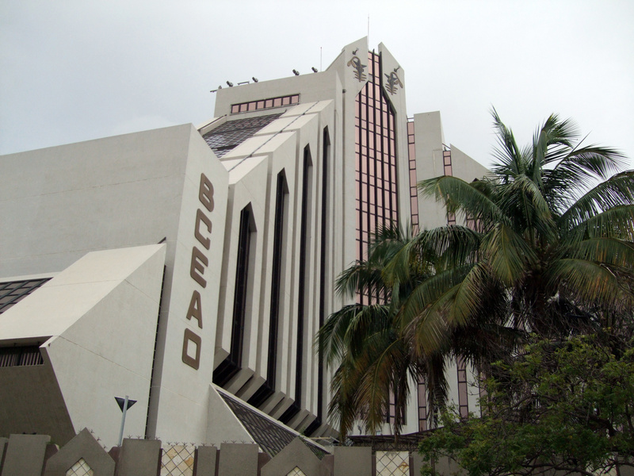
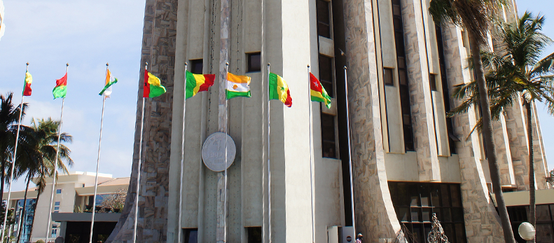
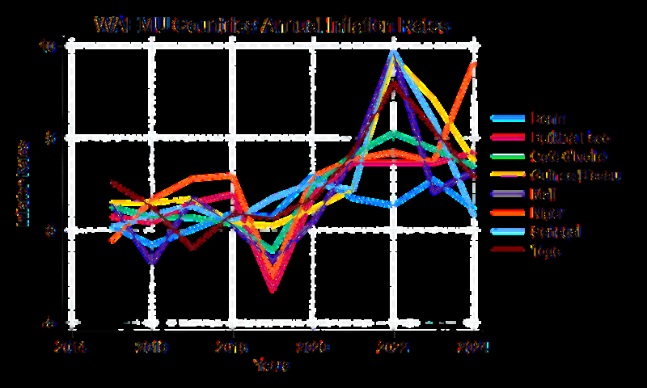

European Monetary Union is the most well-known monetary union in the world. However, it is not the only one. What if we say that there is another monetary union in the middle of Africa with a common central bank called BCEAO (Central Bank of West Africa)? The Central Bank of West African States (BCEAO) is a supranational monetary authority for the eight member states of the West African Economic and Monetary Union (WAEMU), comprising Benin, Burkina Faso, Côte d'Ivoire, Guinea-Bissau, Mali, Niger, Senegal, and Togo. BCEAO headquarters is located in Dakar, the capital city of Senegal.
As the sole issuer of the West African CFA franc (XOF), a currency pegged to the euro, BCEAO is responsible for conducting monetary policy, ensuring financial stability, and managing the foreign exchange reserves of the union. Yet behind this institutional framework lies a rich history intertwined with colonialism and African geopolitics—a history essential to understanding both the BCEAO's origins and the sophisticated challenges it faces today.
A well-functioning economy comes with political stability, but the structure of BCEAO's path depends on navigating distinct economic and geopolitical contexts.
Historical Background and Africanization
The story of BCEAO begins with the CFA franc, created on December 26, 1945. Initially, CFA was the abbreviation of Colonies françaises d'Afrique (French Colonies of Africa). On May 12, 1962, the Banque centrale des États de l'Afrique de l'Ouest (Central Bank of West African States) was formally established as a supranational central bank for eight member countries, and the West African Monetary Union (WAMU) was founded simultaneously with the same membership.
The early years saw Guinea-Bissau join much later (1997), while Mauritania was originally a member but left in 1973. Mali also withdrew in 1962 before rejoining in 1984. After WAMU's foundation, the currency's name changed to Communauté Financière Africaine (African Financial Community). In 1994, the West African Economic and Monetary Union (WAEMU) was established to provide fiscal discipline, convergence, and regulatory coordination among member states—an institutional evolution that would later inform ECOWAS integration proposals.
While the currency was managed from Paris in its early decades, the 1970s marked a significant shift toward Africanization. This transformation occurred under Abdoulaye Fadiga, the first African governor (beginning in 1975), and culminated with the relocation of BCEAO headquarters from Paris to Dakar, Senegal, in 1978. Despite these administrative changes, the currency remained pegged to the French franc at a rate of 50 CFA francs to 1 French franc. The shift represented an important symbolic and practical move toward regional autonomy, even as the peg itself remained a source of ongoing debate about monetary sovereignty.

Structural Similarities with the European Central Bank
BCEAO is often described as an "early trial" of the Euro in terms of the institutional framework emerging from a currency union of sovereign states. Indeed, similarities exist: both are central banks that operate above their member countries, governing a currency union of sovereign states. However, the differences reveal distinct historical and economic contexts between West Africa and Europe.
The table below highlights key structural comparisons:
| Feature | European Central Bank (ECB) | Central Bank of West African States (BCEAO) |
|---|---|---|
| Exchange Rate Regime | Free Float (determined by markets) | Fixed Peg (to the Euro) |
| Reserve Management | Decentralized (held by National Central Banks) | Historically Centralized (Operations Account) |
| Lender of Last Resort | The ECB acts for the banking system | The ECB and French Treasury provide support |
| External Guarantee | None | French Treasury Guarantee (Unlimited Convertibility, pre-2021 period) |
The most significant difference lies in the external guarantee: while the ECB operates independently with no external backstop, the BCEAO historically relied on the French Treasury as a guarantor of unlimited convertibility of the CFA franc. This asymmetry reflects the historical dependency embedded in the currency system, even as the Africanization process sought to diminish it.
Geopolitical Fragmentation and Future Plans
The Economic Community of West African States (ECOWAS), established in Lagos in 1975 and comprising 15 West African nations, has long pursued deeper economic integration. In recent years, ECOWAS has promoted the Eco, a proposed unified currency intended to replace both the CFA franc and national currencies within the region. This vision represents an ambitious attempt at continental monetary integration.
However, as of 2025, the geopolitical landscape has shifted dramatically. Burkina Faso, Mali, and Niger have withdrawn from ECOWAS to form the Alliance of Sahel States (AES), fundamentally challenging the integration narrative. These nations have explicitly rejected both the CFA franc and the proposed fiat-money Eco, instead proposing a resource-backed currency model anchored in gold, uranium, and oil. This development effectively fragments the region into three competing monetary ideologies:
- ECOWAS bloc: Advocates the fiat-money Eco for broader West African integration.
- AES bloc: Pursues a commodity-backed model emphasizing African resource sovereignty.
- WAEMU/CFA zone: Maintains the existing euro-pegged system, prioritizing stability.

While ECOWAS maintains an ambitious 2027 launch target for the Eco, the combination of missed convergence criteria and the new geopolitical disparity renders this timeline highly unrealistic. The withdrawal of resource-rich nations fundamentally undermines both the institutional coherence and the economic rationale for integration under existing ECOWAS frameworks.
Institutional Challenges and Economic Heterogeneity
A deeper examination of BCEAO's current challenges reveals structural vulnerabilities rooted in the region's political and economic diversity. Most West African countries, including WAEMU members, face significant political instabilities. Military coups in Burkina Faso and Mali exemplify broader governance challenges that complicate monetary union management.
A well-functioning monetary union presupposes institutional independence and political stability. Yet despite BCEAO's formal autonomy as a supranational central bank, its decisions remain entangled with the political contexts of member states. This means that political instabilities in any single member state can affect monetary policy decisions across the entire union, potentially disadvantaging more stable members. The risk of such spillovers raises fundamental questions about the sustainability of unified monetary governance in heterogeneous political environments.
Furthermore, WAEMU member states are economically heterogeneous, differing substantially in inflation rates, fiscal policies, growth trajectories, and structural characteristics. When a single monetary policy is applied uniformly across such diverse economies, the policy effects diverge: what serves one economy may harm another. This "one-size-fits-all" challenge—which the eurozone itself has grappled with—is particularly acute in West Africa, where economic disparities are greater and institutional capacity to absorb asymmetric shocks is weaker.

Path Forward: Toward a Mature Monetary Union
BCEAO stands at a historical crossroads. As an institution, it has survived for more than 60 years and successfully managed a monetary union among developing nations—an achievement not to be minimized. Yet its future depends on addressing fundamental questions of sovereignty, independence, and stability.
The institution is effectively divided between two competing visions. One group, exemplified by the AES, demands total sovereignty from France and a currency rooted in African resources. The other, represented by ECOWAS and the existing WAEMU members, seeks either broader integration or the stability of the current arrangement. Between these poles lies the challenge of institutional survival.
Several policy options merit consideration. Rather than choosing between the strict euro peg and untested commodity-backing, a pragmatic intermediate path might involve a basket peg—for instance, incorporating the euro, dollar, and yuan. Such an approach would acknowledge both the demand for African autonomy and the need for macroeconomic stability. A final step toward true institutional maturity would be for BCEAO to accumulate sufficient reserves to dispense entirely with the French guarantee, transforming it into a genuinely independent central bank comparable to any major global monetary authority.
The story of BCEAO as an "early trial of the Euro" in Africa has demonstrated that a monetary union can endure for decades among developing nations. Whether it can survive the disparities in African geopolitical sovereignty and economic heterogeneity remains the defining question of the region—one whose answer will shape the future of West African integration.
Selected references
- Bhatia, R. J. (1985). The West African Monetary Union: An analytical review (Occasional Paper No. 35). International Monetary Fund.
- Central Bank of West African States (BCEAO). (2025, May 19). History of the CFA franc. https://www.bceao.int/en/content/history-cfa-franc
- Masson, P., & Pattillo, C. (2001). Monetary union in West Africa (ECOWAS): Is it desirable and how could it be achieved? (Occasional Paper No. 204). International Monetary Fund.
- Nchadze, L. E. (2019, February 7). The populists are right – How the Franc CFA impoverishes Africa. On Policy Africa.